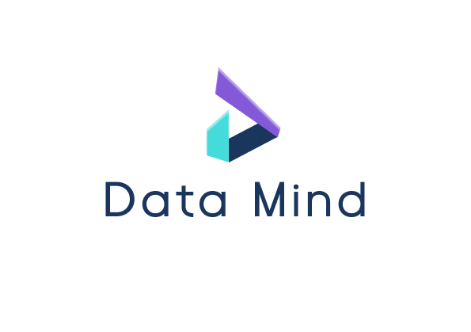
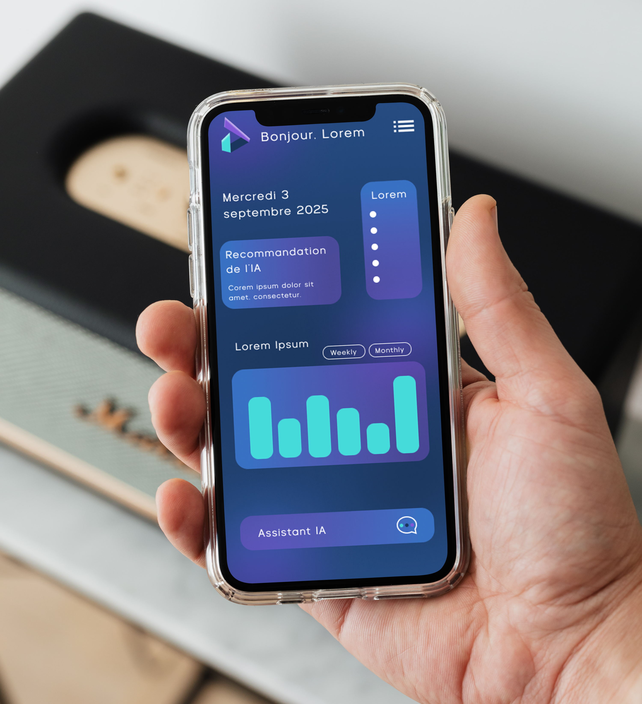

Data Mind
DataMind est une startup spécialisée dans l'intelligence artificielle et l'analyse de données. Elle développe des solutions innovantes pour aider les entreprises à mieux exploiter leurs informations et à prendre des décisions stratégiques grâce à l'IA.
Déclinaisons du Logo

Version pour fond clairMaquette de Mise en Situation

Notes sur le projet
DataMind est un projet fictif réalisé lors d’une immersion professionnelle, axé sur la création de l’identité visuelle d’une marque technologique. L’objectif était de concevoir un logo simple, reconnaissable et futuriste, capable d’incarner des valeurs de technologie avancée, d’innovation et de précision, tout en transmettant une notion de fiabilité et de sécurité.
Réalisé en autonomie avec des retours réguliers, le projet s’est concentré sur la conception du logo et de ses déclinaisons à travers plusieurs mockups. La direction artistique repose sur un style minimaliste, géométrique et moderne, accompagné d’une palette de couleurs froides dominée par le bleu, associée à l’univers technologique. Le choix typographique s’oriente vers une sans-serif contemporaine, lisible et subtilement futuriste.
Ce projet m’a permis de renforcer ma réflexion autour de l’identité visuelle dans un contexte technologique, en travaillant l’équilibre entre modernité, lisibilité et confiance à travers un design épuré et impactant.